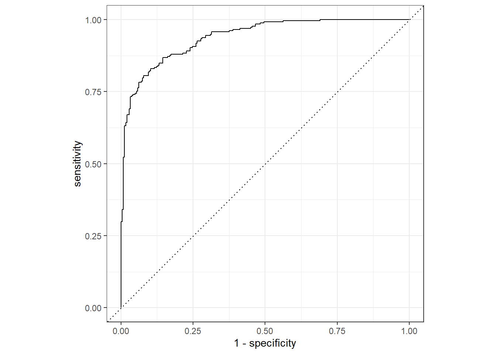

#packages
library(tidyverse)
library(tidymodels)
#check
two_class_example %>% filter(Class1 >0.5) %>% janitor::tabyl(truth) truth n percent
Class1 227 0.8194946
Class2 50 0.1805054#exemplo de tabela cruzada usando janitor
two_class_example %>%
janitor::tabyl(truth, predicted) %>%
janitor::adorn_totals(where = c("col", "row")) %>%
janitor::adorn_title() predicted
truth Class1 Class2 Total
Class1 227 31 258
Class2 50 192 242
Total 277 223 500#trocando nomes
two_class_example %>%
conf_mat(truth =truth, estimate =predicted, dnn =c("vlr_previsto","vlr_real")) vlr_real
vlr_previsto Class1 Class2
Class1 227 50
Class2 31 192#plot heatmap
two_class_example %>%
conf_mat(truth = truth, estimate = predicted) %>%
autoplot(type = "heatmap")#acuracia- prop de acertos do modelo total de acerto / total previu
two_class_example %>%
accuracy(truth= truth, estimate = predicted)# A tibble: 1 × 3
.metric .estimator .estimate
<chr> <chr> <dbl>
1 accuracy binary 0.838#sensibilidade ou recall é a proporção de casos positivos classif corretamente
#Raio X de aeroporto prioriza sensitivity
#diagnóstico de cancer também pois o não diagnóstico resulta em atraso no tratamento
two_class_example %>%
yardstick::sens(truth= truth, estimate = predicted)# A tibble: 1 × 3
.metric .estimator .estimate
<chr> <chr> <dbl>
1 sens binary 0.880#Recall métrica útil nos casos em que o Falso Negativo supera o falso positivol
#importante em casos médicos em que não importa se disparamos um alarme
#falso, mas os casos positivos reais não devem passar despercebidos!
#Em nosso exemplo, Recall seria uma métrica melhor porque não queremos dar alta
#acidentalmente a uma pessoa infectada e deixá-la se misturar com a população
#saudável,espalhando o vírus contagioso.
#Agora você pode entender por que a acuracidade foi uma métrica ruim para modelo.
two_class_example %>%
yardstick::recall(truth= truth, estimate = predicted)# A tibble: 1 × 3
.metric .estimator .estimate
<chr> <chr> <dbl>
1 recall binary 0.880#kappa
two_class_example %>%
yardstick::kap(truth= truth, estimate = predicted)# A tibble: 1 × 3
.metric .estimator .estimate
<chr> <chr> <dbl>
1 kap binary 0.675#npv
two_class_example %>%
yardstick::npv(truth= truth, estimate = predicted)# A tibble: 1 × 3
.metric .estimator .estimate
<chr> <chr> <dbl>
1 npv binary 0.861#ppv
two_class_example %>%
yardstick::ppv(truth= truth, estimate = predicted)# A tibble: 1 × 3
.metric .estimator .estimate
<chr> <chr> <dbl>
1 ppv binary 0.819#A precisão é util nos casos em que os falsos positivos são uma preocupação
#maior do que os falsos negativos.
#A precisão é importante em sistemas de recomendação de música ou vídeo,
#sites de comércio eletrônico, etc. Resultados errados podem levar à perda de
#clientes e prejudicar o negócio.
two_class_example %>%
yardstick::precision(truth= truth, estimate = predicted)# A tibble: 1 × 3
.metric .estimator .estimate
<chr> <chr> <dbl>
1 precision binary 0.819#spec
two_class_example %>%
yardstick::spec(truth= truth, estimate = predicted)# A tibble: 1 × 3
.metric .estimator .estimate
<chr> <chr> <dbl>
1 spec binary 0.793#roc_curve
two_class_example %>%
roc_curve(truth = truth, estimate = Class1 ) %>% autoplot()
#roc_auc
two_class_example %>%
roc_auc(truth = truth, estimate = Class1 )# A tibble: 1 × 3
.metric .estimator .estimate
<chr> <chr> <dbl>
1 roc_auc binary 0.939